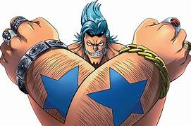

Overview
Franky, also known as "Cyborg" Franky, is a fictional character from the Japanese manga and anime series One Piece, created by Eiichiro Oda. He is the eighth member of the Straw Hat Pirates and serves as the crew's shipwright.
Early Life
Born as Cutty Flam in the South Blue, Franky was abandoned by his pirate parents at the age of ten. He was rescued and taken in by the legendary shipwright Tom, the man who built the Pirate King Gol D. Roger's ship, the Oro Jackson. Under Tom's guidance, Franky developed exceptional shipbuilding skills.
Personality
Franky is known for being:
Despite his strange and perverted behavior, Franky is deeply caring and dependable. He often acts as a morale booster for his crewmates and is admired as an “Aniki” figure by many.
Straw Hat Shipwright
Franky fulfilled his lifelong dream by building the Straw Hats' ship, the Thousand Sunny, using rare Adam Wood. Wanting to see the ship he built sail across the world, he joined the Straw Hat Pirates and became an essential member of the crew.
Cyborg Transformation
After suffering life-threatening injuries while trying to save his mentor Tom, Franky rebuilt his own body using scrap metal. This turned him into a cola-powered cyborg with immense strength and durability.
Powers and Abilities
Franky possesses powerful abilities such as:
His body is heavily armored in the front, while his back remains his main weakness. Cola acts as his energy source, enhancing his combat performance.
Engineering Skills
As a master craftsman trained under Tom, Franky is a genius inventor. He has created multiple combat vehicles and machines, including battle bikes, submarines, and the massive robot known as General Franky.
Later Adventures
During the two-year timeskip, Franky trained at Dr. Vegapunk's abandoned laboratory, upgrading his body and technology. He later played major roles in arcs such as Dressrosa and Wano.
Legacy
Franky represents:
Loud, emotional, and proudly shouting “SUPER!”, Franky remains one of the most unique and beloved characters in One Piece.